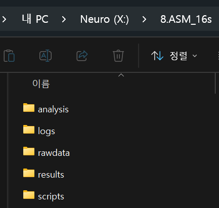

Rscript 활용하기
효율적인 연구를 위한
의학연구
R
본 강의에서는 “배운 R 기초를 어떻게 실제 논문 작성에 써먹는가”에 집중하고자 합니다.
단순히 코드를 입력하는 수준을 넘어, 데이터 입력(Input) 시 논문용 표와 그래프(Output)가 자동으로 생성되는 실무 파이프라인 구축을 목표로 합니다.
Part1. 연구 효율을 높이는 R script 환경 구축
기초를 배운 직후이므로, R을 실제 연구 도구로 세팅하는 법부터 시작합니다.
R script 활용 파이프라인이란?
input: 연구 데이터 ➡️ R script ➡️ output: 논문용 표 & 그래프📊📈
✅ 휴먼 에러 최소화
✅ 연구 효율성
✅ Reproducibility
R project: 폴더 구조 체계화
scripts/: 전처리 및 분석용 스크립트 관리rawdata/: 원본 데이터 (+다른 곳에 백업)analysis/: 중간 산물 저장 (1_df_pt.rds,2_table1.rds, …)results/: 최종 Table 및 고해상도 Figure 정리
R script 구조 템플릿
parameters / arguments: 디렉토리(indir,outdir,resdir), 파일명, 분석 옵션데이터 로드:readRDS(paste0(indir, "1_df_pt.rds"))전처리 및 분석: dplyr 파이프라인결과 저장: 중간 산물은.rds, 최종본은.docx/.csv/.tiff
Part2. R script 활용 분석 파이프라인
예제 데이터를 가지고 Table 1부터 Figure까지, 단계별로 스크립트를 만들어봅니다.
- 데이터 읽기 & Table 1: xlsx 읽기 → 변수 선택 → gtsummary로 Table 1 생성 → Word/CSV 내보내기
- 전처리 스크립트: dplyr 핵심 함수 5개 (filter, select, mutate, group_by, arrange) → Rscript로 정리
- 핵심 Figure 그리기: Kaplan-Meier Curve (survminer) → Cox regression → Forest Plot (broom + ggplot)
Part3. 바이브코딩으로 R 스크립트 파이프라인 만들기
- 프롬프트 작성법: 역할 + 맥락(
colnames,str) + 구체적 요청 - 실전 워크플로우: RStudio 콘솔에서 실행 → 에러 복붙 → 트러블슈팅 → 동작 확인 후
.R파일로 저장 - AI가 틀리기 쉬운 통계적 함정: reference level, 분석 단위, 다중비교 보정 등